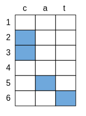
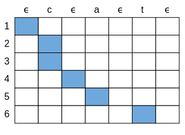
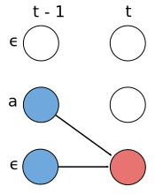
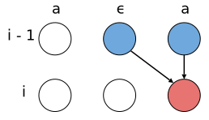
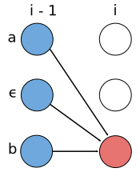
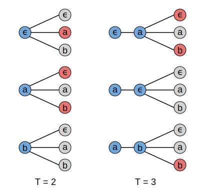
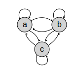
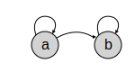
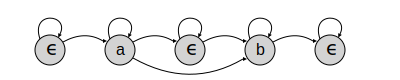

An In-depth Guide to Connectionist Temporal Classification
In this tutorial you will learn about the Connectionist Temporal
Classification (CTC) – a popular algorithm for sequence to sequence
mapping with neural networks.
The Problem
We’ve seen an explosion in the use of neural networks for mapping sequences
to sequences. One work-horse algorithm for neural sequence transduction is CTC.
Certain assumptions made by the CTC algorithm make it especially well suited
for problems such as automatic speech recognition and hand-writing recognition,
where it’s used in many state-of-the-art models.
Handwriting recognition: The input can be
coordinates of a pen stroke or
pixels in an image.
Speech recognition: The input features are audio usually
after applying a spectrogram or some other frequency based feature extractor.
To be a bit more formal, let's consider the problem of mapping input
sequences to corresponding output sequences . We want
to learn a "good" mapping of s to s. For example, in speech recognition a "good"
mapping is one which takes an audio input to an accurate transcription.
The "sequence transduction" problem has three properties which make it difficult
to use traditional supervised learning algorithms.
- Both and
can vary in length.
- The ratio of the lengths and can vary.
- We don’t have an accurate alignment (correspondence of the elements) of
and .
In these circumstances, CTC can learn a function to map elements of
to a distribution over members of .
We can then infer a likely from this
distribution. For such an algorithm to be useful it needs to solve two
problems: the objective function should be computable and inference should be
tractable.
Objective Function: We should be able to efficiently
compute a score for how likely any is given
an . In our case the score will be a
conditional probability , though this
isn’t a strict requirement. The function should be differentiable. This makes optimizing the function
parameters easier.
We need to compute the score for s and s of variable and differing lengths. We also want to
avoid algorithms which require an alignment between
and .
Inference: Given a model for , for any we need to
tractably infer a likely . This means solving
\begin{align}
Y^* = \text{argmax}_{Y \in \mathcal{Y}} p(Y \mid X).
\end{align}
Ideally an optimal can be found
efficiently. With CTC we’ll settle for a close to optimal solution that's not
too expensive to find.
The Algorithm
The first thing we need to do is compute a score of how likely a
is given an . To
do this, the CTC model allows a set of alignments between
and . To get around the fact that the alignment is unknown,
CTC marginalizes over all possible allowed alignments between the two
sequences. In this section we’ll cover what these allowed alignments are, how
to compute the CTC loss function and how to perform inference with a learned
model.
Alignment
The CTC algorithm assumes the alignments between the input and the
output have a specific form. To motivate the CTC alignments, first
consider a naive approach.
Let’s use an example. Let the input length and [c, a, t]. In
this case, one way to align and would be to let the elements of
align to multiple elements of . So the alignment could be
output ()
alignment
input ()
This approach has two problems.
- Some elements of may not correspond to any element of . In this case, we
may not want to force every element of to match with an element of
.
- The sequence can have consecutive repeat characters. This means the
alignments for a given are not unique. We have no way to determine if
the alignment [c, c, a, a, a, t] refers to [c, a, t] or [c, a, a, t] among
others. Later we’ll need to distinguish between these cases to perform
inference with the model.
To get around these problems, CTC introduces a new token to the set of allowed
output characters. This new token is sometimes called the “blank” token. We’ll
refer to it here as . When an input element aligns to
then no output element corresponds to it.
The alignments allowed by CTC are of length ,
the length of the input. Let
be the set of such alignments for a given
. We can produce
from an alignment in the set
as follows:
First, merge repeat characters.
Then, remove any tokens.
The remaining characters are the output.
The set contains all possible alignments which map to .
If there are consecutive repeat characters in then the
between them is required. This allows us to differentiate between alignments of
[c, a, t] and [c, a, a, t].
Let’s go back to the [c, a, t] example with .
Valid Alignments
Invalid Alignments
corresponds to [c, c, a, t]
has length 5
missing the 'a'
A convenient way to visualize the alignment between and is with a
2D alignment matrix. Here’s one for the [, c, c,
, a, t] alignment. Sometimes it’s useful to include the
’s in the alignment matrix. Both are shown below. Note that some of
the tokens are left unaligned. They are optional since they don’t
fall between consecutive repeat characters in .

The alignment matrix without the
token.

The alignment matrix including the token.
We can observe several properties about CTC right away. First, the allowed
alignments between and are strictly monotonic. If the ‘c’ in our
example aligns to the first input element then the ‘a’ must align to input
element two or greater. This implies a second property: the length of can
be no longer than the length of . A third property is that the alignment
of to is many-to-one. Many input elements can align to a single
output element but not vice-versa.
Loss Function
With the alignment setup, we can write down the CTC objective
function for a single pair.
The CTC conditional probability
marginalizes over the set of valid alignments
computing the probability for a single alignment frame-by-frame.
Recall is the set of alignments of to allowed by
CTC. The element is a member of . The
function can be any function which produces a distribution
for each input time-step over the output alphabet given the full
input .
The hard part of the CTC loss is not understanding what it is, but computing
it efficiently. The set can be
very large.For a of length
without any repeat characters and an
of length the size of the set is . For and
this number is almost . For most practical problems, we can’t
delineate the elements of to
compute the sum above.
Instead, we can compute the CTC loss both exactly and efficiently with a
dynamic programming algorithm. Like any dynamic programming algorithm, the key
is recognizing the subproblems.
To simplify the problem let the sequence
\begin{align}
Z = [z_{1}, \ldots, z_{2U+1}] = [\epsilon, y_1, \epsilon, y_2, \ldots, \epsilon, y_U, \epsilon]
\end{align}
consist of the elements of with an at the beginning, end,
and between every character. Let be the CTC score for the
subsequences and . We can compute if
we know the values . There are two cases.
Case 1: Either or (a consecutive repeat character in ). In this case
\begin{align}
\alpha_{i, j} = (\alpha_{i-1, j-1} + \alpha_{i-1, j}) p_i(z_{j} \mid X).
\end{align}
We have this case because only alignments which have matched to some previous
input element are allowed. The first condition says we can’t leave any
characters in unaligned. The second condition says we must have
an between repeat characters.

Case 1 ():
All elements of must be aligned.

Case 1 (repeat):
An has to be
between repeat elements of .

Case 2:
When aligning distinct elements of
the is optional.
Case 2: If we aren’t in the first case, then we’re in the second case and
\begin{align}
\alpha_{i, j} = (\alpha_{i-1, j-2} + \alpha_{i-1, j-1} + \alpha_{i-1, j}) p_i(z_j \mid X).
\end{align}
We have this case because between unique characters is optional.
Alignments which align but not to a previous input are
allowed. Below is an animation of the steps taken by the dynamic programming
algorithm.

An animation of the dynamic programming algorithm used to compute the CTC
score. The input with is on the vertical axis. The
-expanded output [c, a, t] is on the horizontal axis. Node
in the diagram represents – the CTC score between
the subsequences and . The two states used to
compute the final score are marked with concentric circles.
The final score is the sum of the two final states, marked in the example
figure with concentric circles,
\begin{align}
p(Y \mid X) = \alpha_{T,S} + \alpha_{T, S-1}
\end{align}
where .
As long as the individual output model is differentiable then
the entire loss function is differentiable. This is true since computing simply consists of sums and products of the .
The time complexity of this dynamic programming algorithm is with a
fairly small constant. Conveniently, the time to compute the loss function does
not depend at all on the size of the output alphabet.
For a training set , the parameters of a model are tuned to
minimize the negative log-likelihood
\begin{align}
\sum_{(X, Y) \in \mathcal{D}} -\log p(Y \mid X)
\end{align}
as opposed to maximizing the likelihood directly.
Inference
To infer the most likely output sequence for a given input we solve
\begin{align}
Y^* = \text{argmax}_{Y \in \mathcal{Y}} p(Y \mid X).
\end{align}
The simplest method to compute a likely is to take the most likely output
at each time-step. Since there are no conditional dependencies in the output,
this computes exactly
\begin{align}
A^* = \text{argmax}_{A \in \mathcal{A}} p_t(a_t \mid X).
\end{align}
We can then collapse repeat characters and remove tokens to
produce .
In most applications this simple algorithm works well because CTC tends to
allocate most of the probability to a single alignment . However, this
method is not guaranteed to find the most likely . This is because
multiple alignments can map to the same . The sequences [a, a,
] and [a, a, a] could individually have lower probability than [b,
b, b], though the sum of their probabilities could be larger. In this case, the
beam search algorithm would propose [b, b, b] as the most likely hypothesis,
corresponding to [b]. To account for this, the algorithm should
consider the fact that [a, a, a] and [a, a, ] map to the same
output, namely [a].
We can solve this problem with a modified beam search. The modified beam search
is also not guaranteed to find the most likely , but it has the nice
property that we can trade-off more computation (namely a larger beam-size) for
an asymptotically better solution.
A regular beam search would compute a new set of hypotheses at each input
time-step. The new set of hypotheses is generated from the previous set by
extending each hypothesis with all possible output characters.

A standard beam search algorithm with an alphabet of
and a beam size
of three.
We can modify the vanilla beam search to handle multiple alignments mapping to
the same output. In this case instead of keeping a list of alignments in the
beam, we store the output prefixes after collapsing repeats and removing
characters. At each step of the search we accumulate scores for a
given prefix based on all the alignments which map to it. The image below
displays steps two, three and four of the algorithm. The dashed lines indicate
the output prefix that the proposed extension maps to.
The CTC beam search algorithm with an output alphabet
and a beam size of three.
A proposed extension can map to two output prefixes if the character is a
repeat. This is shown at in the figure above where ‘a’ is proposed as
an extension to the prefix [a]. Both [a] and [a, a] are valid outputs with this
proposed extension. For the [a,a] case we should only include the part of the
score of the previous prefix for alignments which end in . This is
because must be between consecutive repeat characters. For the [a]
case, where we don’t extend the prefix, we should only consider the part of the
score of the previous prefix for alignments which don’t end in .
Given this, it’s necessary to keep track of two probabilities for each prefix
in the beam. The probability of all alignments which end in and
the probability of all alignments which don’t end in . Note that
when we rank the hypotheses at each step before pruning the beam, we should
rank by the combined score.
The implementation of this algorithm does not require much code. The code is,
however, dense and tricky to get right. Refer to this gist for
an example implementation in Python.
In some problems, such as speech recognition, incorporating a language model
over the outputs significantly improves accuracy. To do this, we can
repose the inference problem.
The most likely output based on a product of
the CTC conditional probability
the language model probability
and a "word" insertion bonus.
The function computes the length of in terms of the language
model tokens and serves as a word insertion bonus. The language model scores
are only included when a prefix is extended by a character (or word) and not at
every step of the algorithm. This causes the search to favor shorter prefixes,
as measured by , since they do not have many language model
updates. The insertion bonus helps with this. The parameters and
are usually set by cross-validation.
Properties of CTC
We briefly mentioned a few important properties of CTC so far. Here we’ll go
into more depth on what these properties are and what trade-offs they offer.
Conditional Independence
One of the most commonly cited shortcomings of CTC is the conditional
independence assumption it makes. The cost function we wrote down above models
the conditional output distribution as
\begin{align}
p(Y \mid X) = \sum_{A \in \mathcal{A}} \prod_{t=1}^T p(a_t \mid X).
\end{align}
The model assumes that a given output element is conditionally independent of
the other output elements given the input. For many sequence transduction
problems this is not a valid assumption. Say we had an audio clip of someone
saying “triple A”. Another valid transcription could be “AAA”. If the first
letter of the predicted transcription is ‘A’, then with high probability the
next letter should be ‘A’ and with low probability the next letter should be
‘r’. The conditional independence assumption does not allow for this.
In fact speech recognizers using CTC are not able to learn an implicit language
model nearly as well as other models which do not make this conditional
independence assumption. However, this isn’t always a bad trait. In some
cases, having the model implicitly learn a strong language model over the output
can make it less adaptable to new or altered domains. For example we might want
to adapt a model trained to transcribe on phone conversations between friends
to customer support calls.
Alignment Properties
While the CTC algorithm does make strong assumptions about the form of
alignments between and , technically the algorithm is
alignment-free. The objective function marginalizes over the allowed
alignments thus model is agnostic as to how probability is distributed amongst
them. In some problems CTC ends up allotting most of the probability towards a
single alignment, though this is not guaranteed. To force the model to upweight
a single alignment, we can replace the sum over the
alignments with a max,
\begin{align}
p(Y \mid X) = \max_{A \in \mathcal{A}} \prod_{t=1}^T p(a_t \mid X).
\end{align}
As mentioned before, CTC allows only strictly monotonic alignments. In some
problems such as speech recognition this may be a valid assumption. For other
problems such as machine translation where a future word in a target sentence
can align to an earlier part of the source sentence, this assumption might be a
deal-breaker. The strictly monotonic property also implies that the length of
the output must be no greater than the length of the input.Note that if there are consecutive repeats in , the length must be less than by . For problems
where this is often not the case, CTC will not work.
A final important property of CTC alignments is that they are many-to-one. In
other words, multiple input element can align to at most one output element. In
some cases this may not be desirable. We may want to enforce a strict
one-to-one correspondence between elements of and . Alternatively,
we may want to allow multiple output elements to align to a single input
element. For example the sound made by “th” might align to a single input frame
of audio, but a character based CTC model would not allow for this.
Inference with CTC is done in an input synchronous manner as opposed to an
output synchronous manner. This means the beam search is pruned after
processing each input element and the algorithm terminates when all of the
input has been seen. This is opposed to output synchronous decoding which
prunes the beam after each output time-step and typically terminates on an
end-of-sequence marker. Input synchronous inference makes streaming the
decoding process easier. For some applications streaming the inference
computation is critical to achieve low latency response times.
CTC in Context
In this section we’ll discuss how CTC relates to other commonly used
algorithms for sequence transduction.
HMMs
This section requires some familiarity with the HMM and is not critical to
understanding the CTC algorithm. Feel free to skip it on a first read.
At a first glance a Hidden Markov Model (HMM) based sequence transducer does
not closely resemble a CTC model. However, the two algorithms have many
similarities. Understanding the relationship between the two models helps to
understand what exactly CTC does that couldn’t be done before. Putting CTC in
this context will also allow us to understand how it can be changed and
potentially improved for various use cases.
We’ll use the same notation from before, is the input sequence and
is the output sequence with lengths and respectively. Like before
we’re interested in finding a “good” model for . One way to
simplify the modeling problem is to transform this probability with Bayes’ Rule
and compute
\begin{align}
p(Y \mid X) \propto p(X \mid Y) p(Y).
\end{align}
The term is straight-forward to model with a language model, so let’s focus
on . Like before we’ll let be a set of allowed
of alignments of to . In this case members of have length .
Let’s otherwise leave unspecified for now. We’ll come back to
it later. We can marginalize over to get
\begin{align}
p(X \mid Y) = \sum_{A \in \mathcal{A}} p(X, A \mid Y).
\end{align}
To simplify notation, let’s remove the conditioning on , it will be
unchanging in every . Using the HMM assumptions we can
write
\begin{align}
p(X) = \sum_{A \in \mathcal{A}} \prod_{t=1}^T p(x_t \mid a_t) p(a_t \mid a_{t-1}).
\end{align}
Two assumptions have been made here. The first is the usual Markov property.
The state is conditionally independent of all historical states given
the previous state . The second is that the observation is
conditionally independent of everything else given the current state .
Let’s assume that the transition probabilities are
uniform. This gives
\begin{align}
p(X) \propto \sum_{A \in \mathcal{A}} \prod_{t=1}^T p(x_t \mid a_t).
\end{align}
This equation is starting to resemble the CTC loss function from above. In fact
there are only two differences. The first is that we are learning a model of
given as opposed to given . The second is how the set
is produced. Let’s deal with each in turn.
The HMM can be used with discriminative models which estimate .
To do this, we apply Bayes’ rule and rewrite the model as
\begin{align}
p(X) &\propto \sum_{A \in \mathcal{A}} \prod_{t=1}^T \frac{p(a_t \mid x_t)p(x_t)}{p(a_t)} \\
&\propto \sum_{A \in \mathcal{A}} \prod_{t=1}^T \frac{p(a_t \mid x_t)}{p(a_t)}.
\end{align}
If we assume a uniform prior over the states and condition on all of
instead of a single element at a time, we arrive at
\begin{align}
\sum_{A \in \mathcal{A}} \prod_{t=1}^T p(a_t \mid X).
\end{align}
The above equation is essentially the CTC loss function, assuming the set
is the same. In fact, the HMM framework does not specify what
should consist of. This part of the model can be designed on a
per-problem basis. In many cases the model doesn’t condition on and the
set consists of all possible length sequences from the
output alphabet. In this case, the HMM can be drawn as an ergodic state
transition diagram in which every state connects to every other state. The
figure below shows this model with the alphabet or set of unique hidden states
as .
In our case the hidden states of the model (the elements of ) are strongly
related to . We want the HMM to reflect this. One possible model could be
a simple linear state transition diagram. The figure below shows this with the
same alphabet as before and [a, b]. Another commonly used model is the
Bakis or left-right HMM. In this model any transition which proceeds from the
left to the right is allowed.

Ergodic HMM: Any node can be either a starting or
final state.

Linear HMM: The first node is the starting state
and the second node is the final state.

CTC HMM: The first two nodes are the starting
states and the last two nodes are the final states.
In CTC we augment the alphabet with and the HMM model allows a
subset of the left-right transitions. In this model there are two start
states and two accepting states.
One possible source of confusion is that the HMM model differs for any unique
. This is in fact standard in applications such as speech recognition. The
state diagram changes based on the output . However, the functions which
estimate the observation and transition probabilities are shared.
Let’s discuss how CTC improves on the original HMM model. First, we can think
of the CTC state diagram as a special case HMM which works well for many
problems of interest. Incorporating the blank as a hidden state in the HMM
allows us to use the alphabet of as the other hidden states. This model
also gives a set of allowed alignments which may be a good prior for some
problems. Perhaps most importantly, CTC is discriminative as it models directly. This allows us to train the model “end-to-end” and
unleashes the capacity of powerful models like the RNN.
Encoder-Decoder Models
The neural encoder-decoder is perhaps the most commonly used framework for
sequence transduction. This class of models consists of an encoder and a
decoder. The encoder maps the input sequence into a hidden
representation. The decoder consumes the hidden representation and produces a
distribution over the output space . We can write this as
\begin{align}
h &= \texttt{encode}(X) \\
p(Y \mid X) &= \texttt{decode}(h).
\end{align}
The and functions are typically RNNs.
The decoder can optionally be equipped with an attention mechanism. The hidden
state usually has dimensions where is
a hyperparameter. Sometimes the encoder subsamples the input. If the encoder
subsamples the input by a factor then the
inner dimension of will be .
We can interpret CTC in the encoder-decoder framework. This is helpful to
understand the developments in encoder-decoder models that are applicable to
CTC. Also, it’s useful to develop a common language for the properties of these
models.
Encoder: The encoder of a CTC model can be just about any encoder we find
in commonly used encoder-decoder models. For example the encoder could be a
multi-layer bidirectional RNN or a convolutional network. There is a constraint
on the CTC encoder that doesn’t apply to the others. The input length cannot be
subsampled so much that is less than .
Decoder: We can view the decoder of a CTC model as a simple linear
transformation followed by a softmax normalization. This layer should project
all components of the encoder output into the dimensionality of the
output alphabet.
Practitioner’s Guide
So far we’ve mostly developed a conceptual understanding of CTC. Here we’ll go
through a few implementation tips for practitioners.
Software: Even with a solid conceptual understanding of CTC, the
implementation is difficult. The algorithm has several edge cases and a fast
implementation needs to be written in a lower-level programming language.
Open-source software tools can make getting started with CTC much easier:
- Baidu Research has open-sourced warp-ctc. The package is written in C++ and
CUDA. The CTC loss function runs on either the CPU or the GPU. Bindings are
available for Torch, TensorFlow and PyTorch.
- TensorFlow has built in CTC loss and CTC beam search functions. The
TensorFlow version doesn’t support the GPU yet.
- Nvidia also provides a GPU implementation of CTC in cuDNN versions 7 and up.
Numerical Stability: Computing the CTC loss naively is numerically
instable. One method to avoid this is to normalize the ’s at each
time-step. The original publication has more detail on this
including the adjustments to the gradient. In practice this works well enough
for medium length sequences but can still underflow for long sequences.
Another solution is to compute the loss function in log-space with the
log-sum-exp trick. Inference should also be done in log-space
using the log-sum-exp trick.
Beam Search: There are a couple of good tips to know about when
implementing and using the CTC beam search.
The correctness of the beam search can be tested as follows.
- Run the beam search algorithm on an arbitrary input.
- Save the inferred output and the corresponding score .
- Compute the actual CTC score for using the same input.
- Check that with the former being no greater than the later.
As the beam size increases the inferred output may change, but the two
numbers should grow closer.
A common question when using a beam search decoder is the size of the beam to
use. There is a trade-off between accuracy and runtime. We can check if the
beam size is in a good range. To do this first compute the CTC score for the
inferred output . Then compute the CTC score for the ground truth output
. If the two outputs are not the same, we should have .
If then the beam search is performing poorly and a large
increase in the beam size may be warranted.
Bibliographic Notes
The CTC algorithm was first published by Graves et al. in 2006. The
first experiments were on TIMIT, a popular phoneme recognition benchmark.
Chapter 7 of Graves’ thesis gives a more detailed treatment of CTC.
One of the first applications of CTC to large vocabulary speech recognition was
by Graves et al. in 2014 where they used a hybrid HMM and CTC
trained model to achieve state-of-the-art results.
Hannun et al. subsequently demonstrated state-of-the-art CTC based speech
recognition on larger benchmarks.
State-of-the-art results on an online handwriting recognition task using the CTC algorithm
with an RNN were achieved in 2007.
The CTC algorithm has been used successfully in other problems including lip
reading from video, action labelling from
video and keyword detection in audio.
The Hidden Markov Model was developed in the 1960’s with the first application
to speech recognition in the 1970’s. For an introduction to the HMM and
applications to speech recognition see Rabiner’s canonical tutorial.
Encoder-decoder models were simultaneously developed in 2014.
The online publication Distill gives an in-depth guide to
attention in encoder-decoder models.